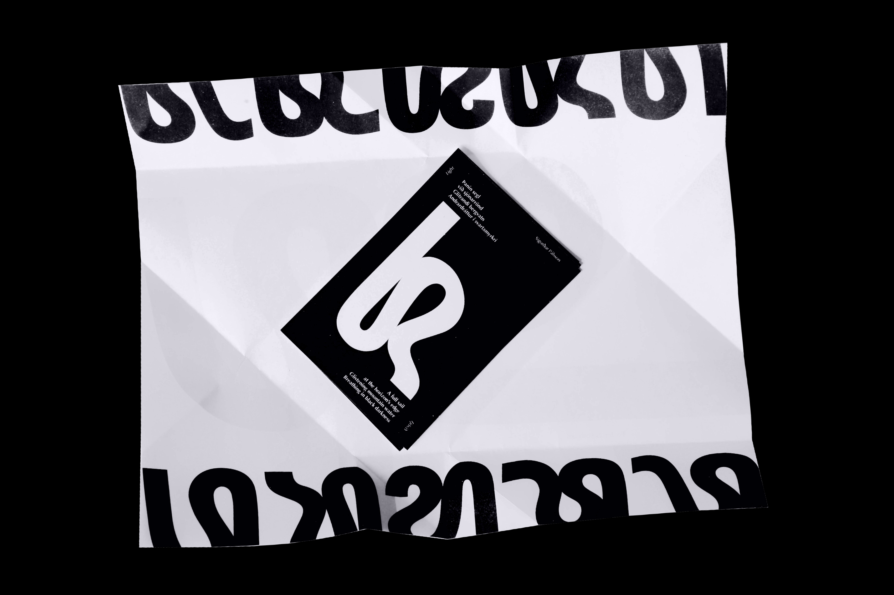
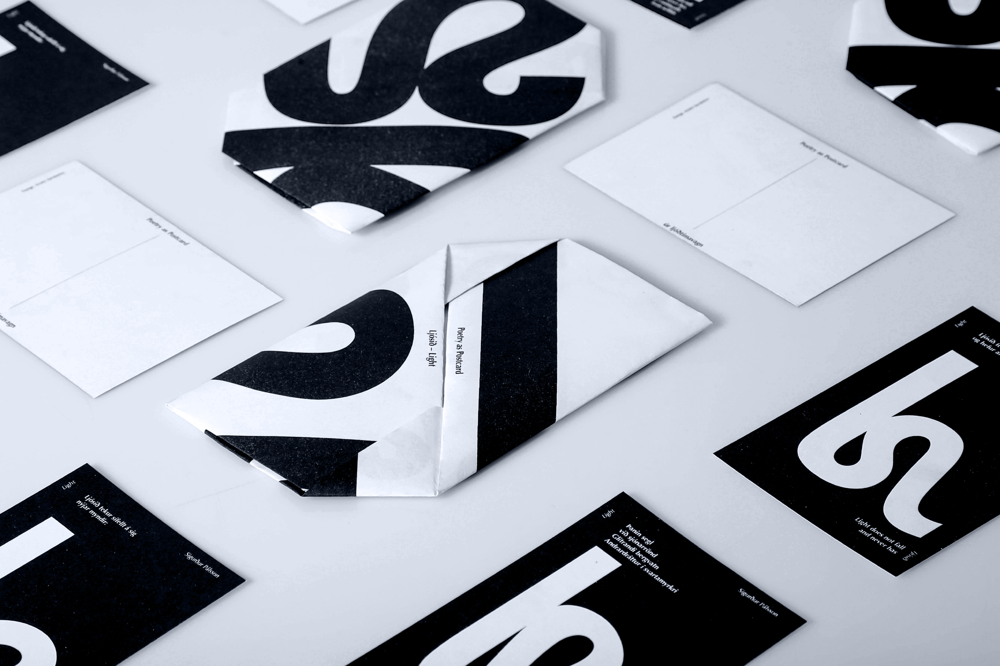

Poetry as postcard is a way of distributing poetry. Each postcard is adorned with a stanza from Sigurður Pálsson’s poem Light accompanied by a shape that changes like the light. Riso printed and wrapped the poem can travel as a whole or separate.



